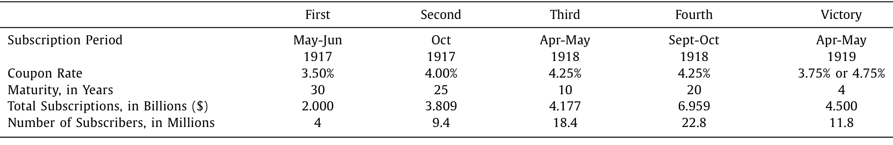
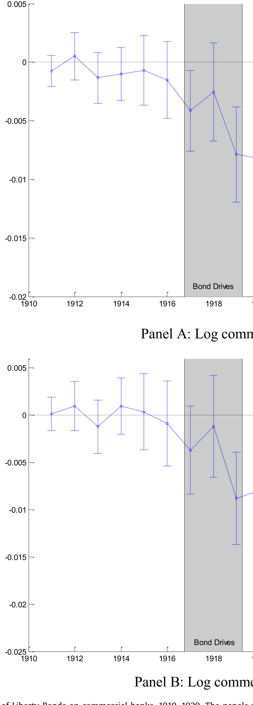
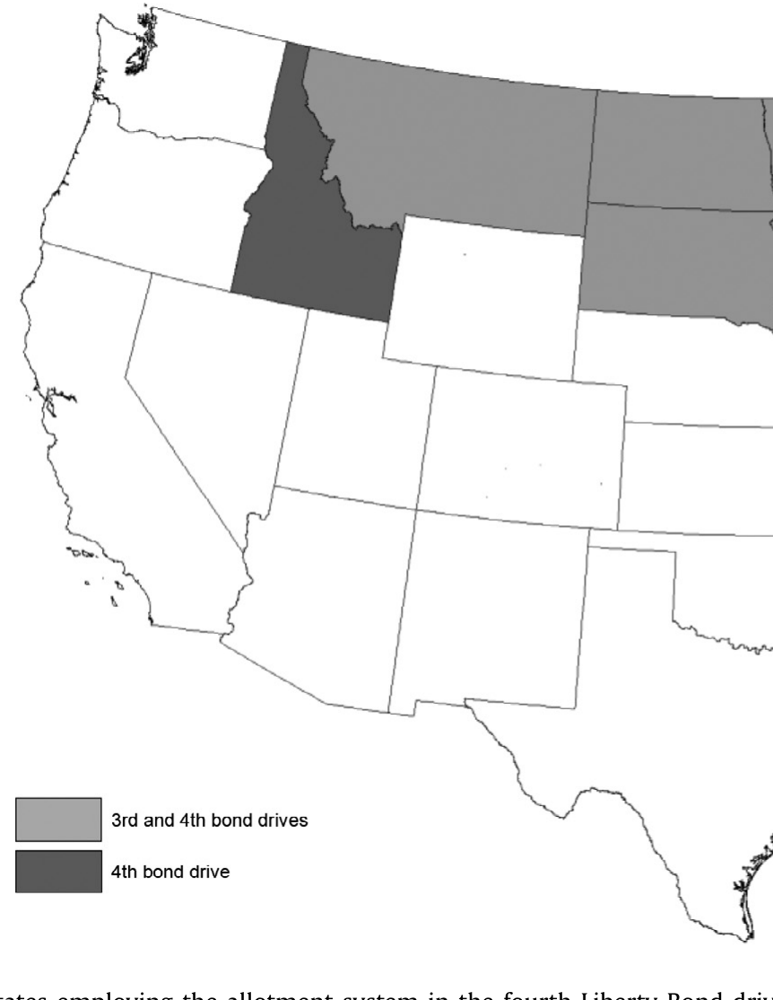
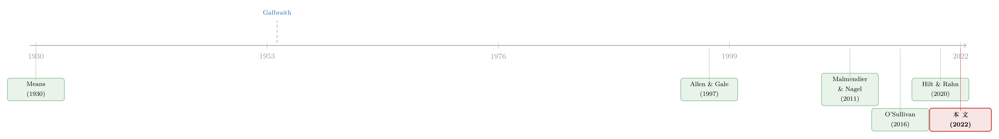

山姆大叔把华尔街领到了缅因街：一战债券如何重塑美国金融
本文读的是 Hilt, Jaremski & Rahn (2022, JFE)：一战期间美国为筹措军费而发动的「自由债券（Liberty Bonds）」运动，把至少 2300 万普通人第一次领进了证券市场。利用县级面板数据和一个巧妙的供给侧工具变量，作者发现——认购率越高的县，1920 年代投资银行越多、商业银行资产越萎缩；而到了 1930 年代末，当年认购率高的州，居民持有股票和债券的概率也显著更高。一场为打仗而办的债券推销，竟悄悄改写了美国金融的走向。
1 引言：一场没人能完整解释的「变形记」
二十世纪头三十年，美国金融发生了一场静悄悄的「变形」。
在那之前，美国人和「钱生钱」打交道的方式几乎只有一种：把存款放进商业银行，由银行去放贷。证券市场是有钱人和保险公司的游戏，与普通家庭无关。可到了 1920 年代，画面完全变了——证券市场迅速膨胀，投资银行的数量从世纪初寥寥无几，暴涨到 1929 年的 6000 多家；持有公司股票的美国人，从 1910 年的不到一百万，飙升到 1930 年代初的一千多万。
这是一个量级上的跃迁。问题是：为什么？
答案的候选项一抓一大把。有人说是税收——一战期间引入的高税率，逼着原本只服务富人的公司去寻找「中等收入者」（Means, 1930）；有人说是技术——收音机、机械冰箱、尼龙这些革命性消费品的公司，本身就特别吸引普通家庭去买它们的股票（Nicholas, 2008）；还有人说，纯粹是因为回报太诱人——1927 年之后那场被 Galbraith（1954）称作「投机狂欢」的大牛市，把无数家庭卷了进去（O'Sullivan, 2016）。
每一个解释听起来都成立。但金融史学家们其实长期偏爱另一个故事：一战的自由债券（Liberty Bonds）运动。这个说法流传已久，连当年的 William Z. Ripley 都断言，「若没有自由公债运动带来的大众投资浪潮」，1920 年代那种「广泛持股的大公司」根本不会以同样的规模出现。
听起来很有道理。可正如本文作者尖锐地指出的：这类断言，长期以来「除了引用一些总量数据和零散的轶事，几乎拿不出别的证据」。一个被反复讲述、却从未被严格检验过的假说——这恰恰是经济史最危险也最诱人的地方。
于是，一个自然的问题浮现出来：在税收、技术、牛市这一堆同时发生的变化里，我们能不能把自由债券这一条线索单独拎出来，量出它到底起了多大作用？
这就是本文要做的事。
2 自由债券：一场「金融战壕」里的总动员
先把背景讲清楚。一战让美国联邦政府开支暴涨了 25 倍。财政部长 William McAdoo 决定，主要靠借钱来打这场仗。他相信借钱有个税收之外的好处：把政府债券卖给老百姓，能让普通美国人对战争「有股份」。他甚至把债券推销比作军事行动——那些「不能去法国的战壕里服役的人，至少可以在国内的金融战壕里出一份力」。
这场总动员的规模今天看来仍令人咋舌。自由债券前后五次发行（四次在战时、一次在战后的胜利公债），总共为联邦政府筹了约 220 亿美元——按占 GDP 的比例折算，相当于今天的 5 万多亿美元。债券面额低至 50 美元，可以分期付款，发行时全部「超额认购」，财政部还刻意把配额向小投资者倾斜。
最关键的数字是：第四次（也是最大一次）自由债券，认购人数达到 22.8 百万。这只是「最低可能值」，因为财政部从没统计过有多少人至少买过一次。而 1918–1919 年劳工统计局的一项调查显示，近 70% 的城市中等收入家庭，在过去一年里认购过自由债券。考虑到战前金融资产对普通家庭何其陌生，对绝大多数认购者来说，这张自由债券很可能是他们这辈子拥有的、除了银行存款之外的第一份金融资产。

Table 1
债券运动给两类金融机构带来了截然相反的命运，这正是本文故事的引擎。
商业银行短期受益、长期受损。债券只能通过银行认购，认购款在被财政部提取前通常留作存款；为了凑钱，财政部和美联储很快允许大家「借钱买债」（borrow and buy），美联储以自由债券为抵押、按优惠利率向银行再贴现——这给商业银行开了一条新业务线。但战后这扇门被猛地关上：1920 年春，会员银行欠美联储的债务高达 25 亿美元，美联储大幅加息以制造紧缩。更深远的是，债券把家庭的储蓄从存款账户引向了证券——商业银行家当年就忧心忡忡，怕「几百万的钱被抽出银行，会减少存款、削弱资源」。
投资银行则是另一番景象。财政部不为自由债券销售付佣金，短期里投行甚至赔本赚吆喝；但 National City Company 的总裁 Charles Mitchell 一眼看穿了长期价值——这场运动「培养出了一支庞大的、全新的投资者大军，他们此前从不知道拥有一张息票债券意味着什么」（Mitchell, 1917）。1920 年代，新一代投行正是靠着向这支「小投资者大军」推销证券而崛起，他们沿用了推销自由债券的那套打法：分期付款、报纸和广播广告、专门向女性或移民卖证券的部门（Carosso, 1970；Quinn, 2019）。
故事的张力到这里就清楚了：自由债券很可能同时挤压了商业银行、催生了投资银行，并把竞争从机构之间推向了储蓄市场的深处。但「很可能」三个字，正是经济史的老大难——怎么证明？
3 识别策略：从「需求」到「供给」，配额制这把钥匙
作者的第一步，是用县级数据做逐年的双重差分（difference-in-differences, DiD）。模型里放了县固定效应、年固定效应，以及最关键的「美联储辖区 × 年份」固定效应（Federal Reserve District-by-year fixed effects）——后者的作用，是把那些在全国或整个辖区层面同时发生的冲击（新税制、高科技公司上市潮、牛市行情）一并吸收掉，只留下「同一辖区内、认购率不同的县之间」的差异。
结果很干净：认购率高的县，在债券运动结束之后才开始出现商业银行的相对收缩和投资银行的扩张，而且这个变化不是某种早已存在的趋势的延续——它精确地始于债券运动的尾声，并贯穿整个 1920 年代。

Figure 4: Effect of Liberty Bonds on commercial banks, 1910–1929 . The panels
DiD 的逐年系数图，是这类「历史叙事检验」里最有说服力的一张图。它一眼回答了「是不是本来就有的趋势」这个最常见的质疑：如果处理前的系数都贴着零线、处理后才整齐地偏离，那因果故事就站住了一大半。
但作者很诚实——这还不够。
为什么？因为对自由债券的需求，可能本身就和某些看不见的县级特征相关：那里的居民也许更富、更懂金融、更愿意投资。如果是这样，那「认购率高的地方后来证券更发达」就可能只是同一种底层特质的两个表现，而非因果。
于是，本文最关键的一步出现了：找一个供给侧的工具变量（instrumental variable, IV）。
在大多数县，债券是由各种志愿者团体推销的，努力程度参差、协调也不好；但在少数几个州，用的是一种叫配额制（allotment system）的办法。配额制把认购设成所有有产者的「默认选项」——你不想买，反而得走一道「退出（opt-out）」的流程。更重要的是，是否采用配额制，不是县里根据自身金融状况决定的，而是在州或美联储辖区层面拍板、自上而下强加给辖区内各县的。
这正是工具变量梦寐以求的性质：配额制制造了一种与本地需求无关的认购率变异。它通过「行为默认项」的力量推高了认购，却又不源于当地居民对证券的内在偏好。

Figure 7: States employing the allotment system in the fourth Liberty Bond drive
作者用了两种略有不同的 IV 设定来利用配额制。两种都明确确认：自由债券导致了商业银行的相对收缩和投资银行的扩张。IV 估计通常足够精确，其「弱工具稳健置信区间（weak-instrument robust confidence intervals）」大多排除了零——这一点很重要，因为工具一旦偏弱，普通 t 检验就会骗人，作者用了 Montiel Olea & Pflueger（2013）、Andrews, Stock & Sun（2019）这一脉的稳健推断来兜底。
4 数据：把一段金融史「县」化
要把一个宏大的历史假说做成可检验的实证，靠的全是数据的颗粒度。本文的功夫，很大一部分花在了「把总量打散到县」上。
- 认购数据来自各美联储自由债券委员会发布的小册子（详见 Hilt and Rahn, 2020）。作者用各县认购人数除以 1920 年人口普查的县人口，得到认购率，主测度取自规模最大、覆盖县最多的第四次发行。受原始资料所限，数据覆盖里士满、克利夫兰、圣路易斯、明尼阿波利斯、旧金山五个美联储辖区，外加爱荷华州。
- 商业银行数据是 1910–1929 年的县级年度资产负债表，来自货币监理署年报和各州银行部门的报告。
- 持股数据则来自 1930 年代末最早问及证券持有的家庭调查（Gallup 民调）。可惜调查只记录了受访者所在的州，所以这部分分析只能用州级的认购率变异。
观测单位是「县 × 年」，样本期 1910–1929（持股部分延伸到 1930 年代末）。
5 主要结果：挤压、催生、与一代人的习惯
把三块结果串起来，是一条完整的因果链。
第一，量级。 一个县的自由债券参与率每提高一个标准差，其商业银行资产相对下降约 20%，投资银行数量相对增加约 5%。这不是「显著但微小」的效应，而是足以改变一个县金融面貌的力度。
第二，机制。 与「两类机构竞争加剧」一致，作者发现：在债券运动之后，同一个县内投资银行的存在，对商业银行资产的估计影响才显著转负。换句话说，投资银行不只是数量变多，它们开始实打实地从商业银行嘴里抢食。这与现代研究中「家庭参与股市会减少银行存款、进而压缩银行信贷」的机制（Lin, 2020）遥相呼应——本文证明，这种金融脱媒（disintermediation）在 1920 年代就已经大规模发生了。（关于脱媒如何反过来冲击银行与实体，可参见《通胀的另一张账单：当它先砸了银行，再砸了房子》。）
第三，也是最打动人的一块——长期的「习惯」。 利用 1930 年代末的家庭调查，作者发现：当年自由债券认购率越高的州，十多年后居民报告持有股票或债券的概率显著更高，而且这是在控制了一系列家庭特征之后依然成立的。这与 Malmendier and Nagel（2011）那个著名的发现一脉相承——早年的金融经历，会长久地塑造一个人的资产配置。一场为期不到两年的债券推销，竟在一代人身上留下了几十年都抹不掉的投资习惯。
这就回到了本文标题的隐喻：山姆大叔，亲手把缅因街（Main Street，普通老百姓）介绍给了华尔街（Wall Street）。 不是税收，不是收音机，也不只是牛市——而是政府为打仗而办的债券运动，无意间完成了一场全民金融启蒙。它既是大规模的金融素养（financial literacy）教育，也是一次对「信任金融市场」的集体灌输（这与 Guiso et al., 2008 强调的「信任」渠道相合）。关于金融素养教育的长期外溢，也可参见《一门高中理财课，能让金融犯罪少三成？》。
6 文献脉络
这篇论文坐在好几条研究线的交汇处。
最早的一脉，是同时代人对「持股大众化」的观察与统计——Means（1930）记录了股票所有权在美国的扩散，Galbraith（1954）则用「投机狂欢」给那个时代定了调。这些是叙事和总量证据，却缺乏因果。
接着，是一条理论线索：Allen and Gale（1997）、Song and Thakor（2010）讨论了银行与金融市场之间的竞争与互补——本文把这场竞争放进了 1920 年代的历史显微镜下。

然后，是关于「经历塑造行为」的现代行为金融——Malmendier and Nagel（2011）的「大萧条婴儿」是其代表；本文则把一次具体的历史干预（债券运动）当作经历的来源。（同样研究「经历如何长期改变金融决策者」的，还有《他们年轻时见过银行成片倒下——后来，这成了银行的护城河》。）
更近的一脉，是金融史学者对美国证券市场扩张的重新梳理——Ott（2011）的《当华尔街遇见缅因街》、O'Sullivan（2016）、Quinn（2019）等，反复提出「自由债券创造了后来持股普及的前提条件」这一假说。本文承接的正是这条线，而它的独特贡献在于：第一次给这个假说赋予了可检验的实证内容，并把效应从「持股」扩展到了商业银行与投资银行的此消彼长。直接的数据与制度根基，则来自作者自己的前作 Hilt and Rahn（2020）。
7 评论与延伸（Q&A + 研究方向）
(a) 几个可能的疑问
Q：配额制这个工具，凭什么算「外生」？
关键在于决策层级。是否用配额制，是在州或美联储辖区层面决定、再强加给县的，而不是县根据自身金融条件选的。这就切断了「本地证券需求 → 高认购」这条内生通道。当然，排他性约束（exclusion restriction）仍需相信：配额制只通过提高认购率、而非别的渠道影响后来的金融发展——这一点无法直接检验，是 IV 故事永远的软肋。
Q：DiD 已经能看出处理前没有趋势了，为什么还非要上 IV？
因为「无平行趋势之忧」不等于「无遗漏变量之忧」。逐年系数图能排除「债券运动前认购率高的县就已经在分化」，却排除不了「某种稳定的、看不见的县级特质同时驱动了高认购和后来的证券发达」。DiD 管的是时间维度的混淆，IV 管的是横截面的内生性——两者解决的是不同的病。
Q：20% 的商业银行资产下降，是绝对萎缩还是相对萎缩？
是相对萎缩。全国商业银行总资产在整个研究期其实是增长的；本文识别的是「认购率高的县相对于认购率低的县」的差异。所以正确的读法是「自由债券拖慢了这些县的银行扩张、并把储蓄分流向证券」，而不是「银行业整体崩了」。
Q：会不会其实是 1920–21 年美联储紧缩、农产品价格暴跌把农村银行打垮了，跟债券无关？
这正是「辖区 × 年」固定效应要对付的混淆之一。农业冲击和货币紧缩主要在辖区/全国层面发挥作用，会被这组固定效应吸收（作者也引用了自己关于一战农业价格冲击与银行的研究，Jaremski and Wheelock, 2020）。而配额制 IV 进一步保证了识别来自与本地条件无关的认购变异。
Q：1930 年代持股那部分，只有州级数据，结论可信吗？
这是本文最弱的一环，作者也坦承。调查只记了州，于是这部分只能用州级认购率变异，颗粒度远粗于县级的银行分析，且样本是 1930 年代末的截面。它提供的是「方向一致」的旁证，而非与主分析同等强度的因果证据。
Q：这篇论文能区分债券运动里的「哪一种」作用吗——是金融教育、储蓄激励，还是单纯的投资经历？
不能，作者明说了。自由债券是一个「打包的处理」：金融素养教育、储蓄鼓励、销售宣传、赊购便利、以及最终的投资经历，全部同时发生。本文量的是这一整包的合力，无法拆出各分项的贡献。这既是诚实，也是后续研究的空间。
(b) 几个可能的研究问题与提案
1. 把「打包处理」拆开。 - 【经济故事】债券运动同时给了人们知识、激励和经历。如果能找到某个地区只强化了其中一项（比如只发了教育小册子、却没搞赊购），就能分离出「金融素养」与「实际持有经历」各自的长期效应。 - 【可行性】中。需要在各辖区委员会档案里找推销手法的细颗粒差异（小册子分发、是否赊购、是否有女性/移民专项），并构造手法层面的工具。资料零散但存在，识别可行但费力。
2. 自由债券与后来的违约/损失经历。 - 【经济故事】许多人是赊购的，战后通缩和加息让债券价格下跌，不少小投资者亏了钱。第一笔金融资产就「踩雷」，会催生持股、还是吓退持股？这能检验「负面初次经历」与「正面初次经历」的非对称长期效应。 - 【可行性】中。需要把县级认购率、赊购比例与债券二级市场价格变动匹配，再接到 1930 年代持股调查上。识别要靠各地赊购强度的差异，数据拼接有难度但不离谱。
3. 投资银行的「人」从哪来。 - 【经济故事】本文提到，1920 年代崛起的投行不少由当年参与债券运动的银行家领衔。如果能追踪个人——谁在运动中当过推销组织者、之后又开了投行——就能把「机构扩张」还原为「人力资本的再配置」。 - 【可行性】中偏低。需要把委员会人员名册与后来的投行注册/名录做个人层面的链接，工作量大、匹配噪声高，但一旦做成会非常漂亮。
4. 把视角搬到公司债与信用市场。 - 【经济故事】自由债券把普通人领进了「政府债券」，那它有没有顺带培育出对公司债的需求？1920 年代公司债的零售化、面向散户的债券推销，是否也踩着债券运动的脚印？这能把本文的「持股」结论延伸到信用市场。 - 【可行性】中。需要 1920 年代公司债发行与持有人结构的细颗粒数据，史料稀缺是主要瓶颈；可先在有数据的发行上做探索性分析。
5. 默认项（opt-out）的历史外部性。 - 【经济故事】配额制本质上是一次大规模的「默认选项」实验——把认购设成默认，靠惰性推高参与。现代关于默认项（如自动加入退休金计划）的文献汗牛充栋，但缺历史长周期证据。配额制州能否提供一个「默认项的几十年后遗效应」的天然实验？ - 【可行性】高。本文已经构造了配额制的州级变异和工具；把结果变量换成更广的长期金融行为（持股、储蓄、甚至代际传递），是顺水推舟的延伸。
8 我的判断
这是一篇典范式的金融史实证：问题大、数据细、识别讲究、结论克制。它最大的贡献，是把一个流传了近百年、却始终停留在「轶事 + 总量」层面的假说，第一次钉死在了县级面板和供给侧工具变量上——并且没有过度声张，老老实实承认自己量的是「一整包处理」的合力。逐年 DiD 与配额制 IV 双管齐下，把「趋势内生」和「横截面内生」两种病分开来治，方法上干净利落。
对识别，我最大的担心仍落在排他性约束上：配额制是否真的只通过抬高认购率影响后续金融发展？一个采用配额制的州，往往也意味着更强势、更集权的地方政府与金融组织能力，而这种「组织能力」本身就可能独立地促进金融发展。作者用辖区固定效应和稳健弱工具推断做了不少努力，但这一层担忧无法被完全洗清。此外，1930 年代持股那部分受限于州级数据，证据强度明显弱于主分析，更像是一个方向一致的补充，而非独立的支柱。
后续我最想看到的，是把「打包处理」拆开——哪怕只能分离出「金融教育」与「实际投资经历」这两块的相对贡献，对今天设计普惠金融与金融素养政策都意义重大。其次，我很好奇这条线索能否延伸到公司债与信用市场：自由债券培育的，究竟是对「安全的政府债」的偏好，还是对「证券」这一大类的普遍接纳？这关系到我们如何理解一个零售化信用市场的诞生。
参考文献
- Allen, F., & Gale, D. (1997). Financial markets, intermediaries and intertemporal smoothing. Journal of Political Economy 105(3), 523–546.
- Andrews, I., Stock, J., & Sun, L. (2019). Weak instruments in instrumental variables regression: theory and practice. Annual Review of Economics 11, 727–753.
- Carosso, V. (1970). Investment Banking in America: A History. Harvard University Press, Cambridge.
- Galbraith, J. K. (1954). The Great Crash: 1929. Houghton Mifflin, New York.
- Garbade, K. (2012). Birth of a Market: The U.S. Treasury Securities Market from the Great War to the Great Depression. MIT Press, Cambridge, MA.
- Guiso, L., Sapienza, P., & Zingales, L. (2008). Trusting the stock market. Journal of Finance 63(6), 2557–2600.
- Hilt, E., Jaremski, M., & Rahn, W. (2022). When Uncle Sam introduced Main Street to Wall Street: Liberty Bonds and the transformation of American finance. Journal of Financial Economics 145, 194–216.
- Hilt, E., & Rahn, W. (2020). Financial asset ownership and political partisanship: Liberty Bonds and Republican electoral success in the 1920s. Journal of Economic History 80(3), 746–781.
- Jaremski, M., & Wheelock, D. (2020). Banking on the boom, tripped by the bust: banks and the World War I agricultural price shock. Journal of Money, Credit and Banking 52(7), 1719–1754.
- Lin, L. (2020). Bank deposits and the stock market. Review of Financial Studies 33, 2622–2658.
- Malmendier, U., & Nagel, S. (2011). Depression babies: do macroeconomic experiences affect risk-taking? Quarterly Journal of Economics 126(1), 373–416.
- Means, G. (1930). The diffusion of stock ownership in the United States. Quarterly Journal of Economics 44, 561–600.
- Montiel Olea, J. L., & Pflueger, C. (2013). A robust test for weak instruments. Journal of Business & Economic Statistics 31(3), 358–369.
- Nicholas, T. (2008). Does innovation cause stock market run-ups? Evidence from the great crash. American Economic Review 98(4), 1370–1396.
- O'Sullivan, M. (2016). Dividends of Development: Securities Markets in the History of US Capitalism, 1866–1922. Oxford University Press, New York.
- Ott, J. (2011). When Wall Street Met Main Street: The Quest for an Investors' Democracy. Harvard University Press, Cambridge, MA.
- Quinn, S. (2019). American Bonds: How Credit Markets Shaped a Nation. Princeton University Press, Princeton.
- Song, F., & Thakor, A. (2010). Financial markets, banks, and intertemporal smoothing. (作为银行—市场竞争文献的代表，见正文引用。)